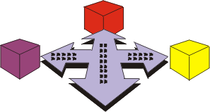

|
La disciplina de despliegue describe tres modalidades de despliegue del producto:
-
instalación personalizada
-
oferta de producto "comercializable"
-
acceso al software a través de Internet

En cada instancia, se enfatiza la prueba del producto en el lugar de desarrollo, seguido por una prueba de versión beta
antes de que el producto se publique finalmente para los clientes.
Aunque las actividades de despliegue tienen su punto álgido en la fase de transición, algunas de las actividades se dan
en fases más tempranas para planificar y preparar el despliegue.
La disciplina de despliegue está relacionada con otras disciplinas, de la forma siguiente:
-
La disciplina de requisitos produce la especificación de requisitos de software que consiste en el modelo de
guión de uso y en los requisitos no funcionales. Junto con el prototipo de interfaz de usuario, la especificación
de requisitos de software es una de las entradas clave para el desarrollo de los materiales de soporte para los
usuarios y los materiales de formación.
-
Las pruebas son una parte indispensable del despliegue, y los elementos esenciales de las pruebas son el
resumen de evaluación de prueba y las actividades para la implementación, ejecución y gestión de las pruebas.
-
Se hace referencia a la disciplina de Gestión de cambios y configuración para proporcionar una compilación
con línea base y para publicar el producto y los mecanismos para el manejo de las solicitudes de cambios que se
generan como resultado de las pruebas de versión beta y las pruebas de aceptación.
-
En la disciplina de gestión de proyectos, las actividades para desarrollar un plan de iteración y un plan de
desarrollo de software tienen una gran influencia sobre el desarrollo del plan de despliegue. Asimismo, el trabajo
necesario para producir un plan de aceptación del producto debe coordinarse con la forma en que se gestione la
prueba de aceptación en la disciplina de despliegue.
-
La disciplina de entorno proporciona el entorno para las pruebas de soporte.
|